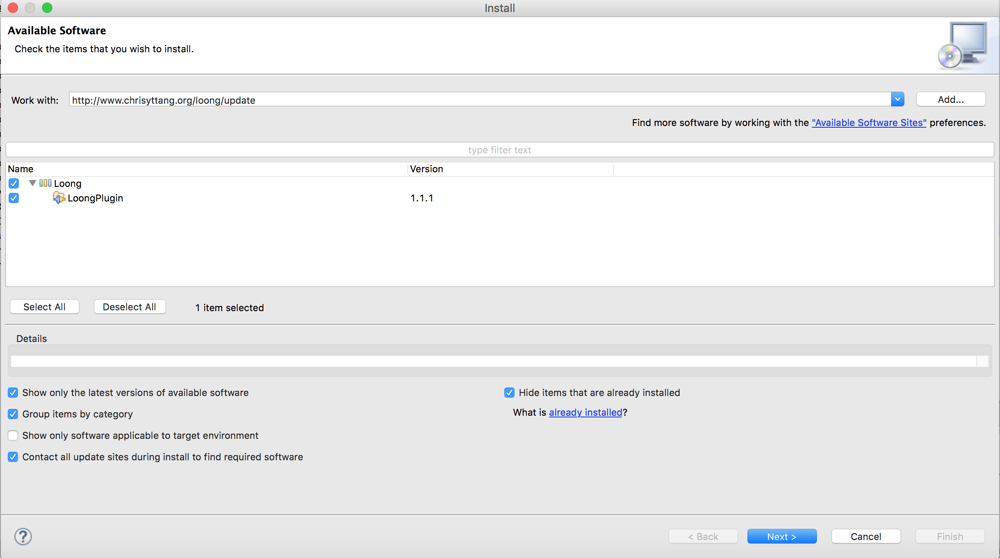

Loong Eclipse Plugin
Loong is a software product line tool for analyzing and decomposing legacy code and constructing product line. It follows the paradigm of virtual separation of concerns, i.e., developers do not physically extract the feature code, and it allows developers to select seeds for each feature inside the feature model. Then the feature mining process will be activated to extract code segments that implement each feature. Code fragments belonging to a feature are shown with a background color. At last, each possible configurations for the product line will be extracted as a product variant for the product line. In Loong, it implements several feature mining strategies including text comparison, topology analysis, type checking, and our resolve-binding strategy. You can also consider implementing your own feature mining strategy and integrated with loong, which allows you to compare your algorithm with peers. Please reference the tutorial to see how to add your algorithm to Loong easily.
Screenshots
Tutorials
Please kindly notice that we still adding new features to Loong Plugin, version from the github source is nightly built, but not stable. For the stable track, please use our update site.
1. Install Loong Eclipse plugin on your Eclipse
- In the menu bar, click Help and choose Install New Software.... In the popup dialog, type the update site
http://www.chrisyttang.org/loong/updateto the Work with: box to install Loong plugin. Then you can simply follow the installation instructions, for plugin depenences you should install could be found in this link(GEF 3.10 *If you have ready installed it, you can just skip this.)

2.(Optional:for CIDE user only) Migrate a CIDE2 Project to Loong Project
- This is a redundant step if you do not work from a CIDE2 project and you can safely skip this step. In Loong, we provide two options for migrating a CIDE 2 project to Loong: (1) Bridge CIDE 2 Project to a Loong Project(safe mode), which a CIDE 2 nature is detected in this project's description set. Namely, it is a project in a CIDE 2 mode in your workspace; and (2) Bridge CIDE 2 Project to a Loong Project(Force: Not safe), which will migrate any project into a Loong Project, since user is required to guarantee it is a CIDE 2 project indeed.
3. Design A Feature Model for Project
- In Loong plug-in, we inheritance the feature model of guidsl and the feature model editor in FeatureIDE plugin. The detail grammar used in guidsl could be found at following website: The guidsl Tool. In addition, the feature model editor is the early version in FeatureIDE plugin (2010). You can use this function in the submenu:
Edit Feature Model...(guidsl). For FeatureIDE tool and the feature model editor, you can redirect to FeatureIDE host page at FeatureIDE and a paper Reasoning about edits to feature models for more detail.
4. Annotate Seeds for Features
- Seeds are selected for features concerned. To annotate a seed, you have to turn to CLREditor and use the context menu. In the context menu, use
Annotated feature to the selectionand select a specific feature for this region. After this selection, the feature will be annotated to this region.
5. (Optional) Save the log for seeds status
- In Loong plug-in, we provide an useful feature for debugging and learning purpose. That is, we allow user to save the annotation status at any time and recover the status. In the project context menu, there are two useful actions:
create Log for seedsandRollback to A Certain Status(Seed). The actioncreate Log for seedsallows you to save current status. Usually,we save the annotation for seed. And you can useRollback to A Certain Status(Seed)action to roll back to a stutas from any step.

6. Create Program DataBase and Set Feature Mining Strategy
- To conduct a feature mining work, the first step is to build the database for the project, use action
Create Program Database...in the project context menu, please reference the screenshot in the previous step. Furthermore, we allow users to select their own feature mining strategy in the actionSet Feature Mining Strategyin the project context menu.
7.Annotate features
- Then we can start an annotation task on this project, use the action
Annotate Featuresprovided by project context menu.
8. (Optional) Assess the feature mining performance
- As a research-oriented work, we provide a function that allow user to access their feature mining strategy by referencing benchmark. Also, in the project context menu, use the action
Compare Performance With Benchmark. Then you can select a benchmark in workspace to compare with. After this process, a file named result.xml will be built inside your project, where you can inspect your feature mining strategy's performance.* For same case studies and benchmarks in CIDE format, you can use Loong to convert a CIDE project into a Loong project(see step.2).
Other Wiki document could be found at our Github Wiki
Download and Install
To install Loong plugin, you can either use our host update site at Loong Plugin Update site or obtain it from officical Eclipse Marketplace at Eclipse Loong.
To trace the source code and contribute to Loong plugin or even build an extension application on Loong, you can simply reference the github respository at Github. Loong
Experiment & Data
Please check shared link of google drive for all case studies and experimental data at: https://drive.google.com/folderview?id=0B9l0qvk6pnW0ZDRYMmxIQVhRb0U&usp=sharing
Files are structured in the following order
- Loong_Case Study The root folder
- Case_Project_i a specific project
- benchmark contains the benchmark project with color annotated in CIDE and Loong format respectively.*(please reference our tutorial on how to convert a CIDE2 project into a Loong Project binding color annotation.)
- clean contains the project without any colored annotation.
- result contains feature mining results under different feature mining strategies.
- seeds contains the project only with seeds annotated.
- Case_Project_i a specific project
Publication
To use this tool in your research, please cite the following publication:
Yutian Tang, and Hareton Leung, "StiCProb: A Novel Feature Mining Approach Using Conditional Probability", In Proceedings of 24th IEEE Internaltional Conference on Software Analysis, Evolution, and Reengineering (SANER), 2017(bibtex)
Other publication(s) use Loong plugin
Yutian Tang, and Hareton Leung, "Constructing Feature Model by Identifying Variability-aware Modules". In Proceedings of 25th IEEE International Conference on Program Conprehension (ICPC), 2017. May 22-23, Buenos Aires, Argentina.
References
FeatureIDE link
In the loong plugin project, we follow the feature model diagram in FeatureIDE.
CIDE link
In the loong plugin project, we follow the basic design infrastructure in CIDE with customerized functions.
LEADT link
In the loong plugin project, we reference the implmentation of Type check, topology, substring comparsion strategies in LEADT.
Contact
To report a bug, please start an issuse on our github page or you can write an email to loongplugin(AT)gmail.com. In the email, please specify which sub-tool you use in Loong.
Yutian TANG (Chris)
Main developer and maintainer for Loong Plugin
Email: csytang (AT) comp (dot) polyu (dot) edu (dot) hk